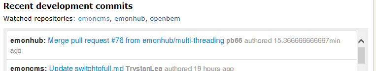

I've been thinking that perhaps it would be useful to make it easier to see where various developments are taking place, I always use the active forum topics list when checking the forums and I've added the twitter widget a few weeks ago. There's now a widget at the bottom of the front page that lists the last 50 commits to the watched repositories. Currently emoncms, emonhub and openbem.
I think it would be great to be able to see the github issue list too but not sure yet how to do that.
Re: New recent development commits list on front page
This is Interesting stuff, being able to see the issue's would be good and be very informative, perhaps even tie in discussions happening in different locations via the forum. Have you looked at yahoo pipes?
Heres a example feed I just knocked up for emonHub and emonCMS issues
http://pipes.yahoo.com/pipes/pipe.info?_id=9f2399926cdab72fda6dd631ccd4499b
I managed to create that feed in very little time and the feed is available in many formats, you can add as many repo's as you want to one feed but maybe a seperate feed for each would be easier to follow conversation. I have since noticed the results of my example feed only show the "issue" rather than the latest comment despite being in order of most recently updated, but I'm sure that can be changed.
I tend to just monitor the "active forum topics" in the side bar also, perhaps the forums page could get a make over or a new "active" page could make a nice alternative homepage for regular users with just active content links all on one screen. the existing homepage is great for normal traffic but there is alot of page that just doesn't get looked at by us frequent flyers.
Paul
Re: New recent development commits list on front page

"15.366666666667 min ago" is a very impressive level of precision :-)